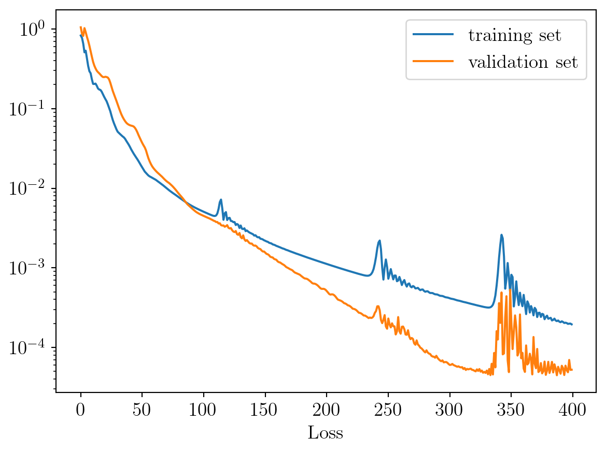

Start by importing pytorch & matplotlib. I could not make the latex interpreter work in binder, so the corresponding lines are commented out.
Code
import torch import torch.nn as nnimport matplotlib.pyplot as pltplt.rcParams['svg.fonttype'] ='none'from IPython.display import set_matplotlib_formatsimport matplotlibimport numpy as np#%% matplotlib setupmatplotlib.rcParams["text.usetex"] =Truematplotlib.rcParams["font.family"] ="serif"matplotlib.rcParams["font.size"] ="14"mps_device = torch.device("mps")
Create the functions
The separability proprieties of several functions are investigated. This code first shows the separability proprieties of different ways of clustering the 1D space into two regions. Two types of functions are used to do so: * A sharp step function (Heaviside), * A smooth one (Tanh).
In both cases the position of the jump is parametrised by a scalar parameter \(\alpha\).
Furhter investigations are conducted on moving front(s) with a * A gaussian function that is moving * Two gaussian functions moving at different rates
Code
L =10# Space domainAlpha_vect = torch.linspace(0,1,100) # vector of alphasx_vect = torch.linspace(0,L,2000) # vector of xFunction ='Heaviside'# Alpha-parameterised step functionFunction ='Tanh'# smooth alpha-parameterised step function# Function = 'Gauss' # Alpha-parameterised front function# Function = 'Gauss_sum' # Double alpha-parameterised front functionsif Function =='Heaviside': F = torch.heaviside((x_vect[:,None] - (1-Alpha_vect[None,:])*L), x_vect[-1]/x_vect[-1])elif Function =='Tanh': F = torch.tanh((x_vect[:,None] - (1-Alpha_vect[None,:])*L))elif Function =='Gauss': F = torch.exp(-(x_vect[:,None] - (1-Alpha_vect[None,:])*L)**2)elif Function =='Gauss_sum': F = torch.exp(-(x_vect[:,None] - (1-Alpha_vect[None,:])*L)**2) + torch.exp(-(x_vect[:,None] - (1-2*Alpha_vect[None,:])*L)**2)
Define the autoencoder
Code
class AutoEncoder(nn.Module):def__init__(self):super().__init__()self.N_0 =2000self.N_1 =1000self.N_2 =200self.N_3 =1self.encoder = nn.Sequential( nn.Linear(self.N_0,self.N_1), nn.Tanh(), nn.Linear(self.N_1, self.N_2), nn.Tanh(), nn.Linear(self.N_2, self.N_3) )self.decoder = nn.Sequential( nn.Linear(self.N_3,self.N_2), nn.ReLU(), nn.Linear(self.N_2, self.N_1), nn.ReLU(), nn.Linear(self.N_1, self.N_0) )def forward(self, x, role ="decode"):ifself.training: e =self.encoder(x) d =self.decoder(e)return delse:match role:case"encode": e =self.encoder(x)return ecase"decode": d =self.decoder(x)return dROM = AutoEncoder()MSE = nn.MSELoss()optimizer = torch.optim.Adam(ROM.parameters(), lr =1e-3)
/var/folders/vt/tk0pvn6x7dj443pvlvkxzcj00000gn/T/ipykernel_50159/3940643703.py:11: UserWarning:
The use of `x.T` on tensors of dimension other than 2 to reverse their shape is deprecated and it will throw an error in a future release. Consider `x.mT` to transpose batches of matrices or `x.permute(*torch.arange(x.ndim - 1, -1, -1))` to reverse the dimensions of a tensor. (Triggered internally at /private/var/folders/k1/30mswbxs7r1g6zwn8y4fyt500000gp/T/abs_5ae0635zuj/croot/pytorch-select_1700511177724/work/aten/src/ATen/native/TensorShape.cpp:3618.)
Train the model
Code
ROM.train()F_train = F_train.to(mps_device)F_val = F_val.to(mps_device)ROM.to(mps_device)for epochs inrange(n_epochs): loss = MSE(ROM(F_train),F_train) optimizer.zero_grad() loss.backward() optimizer.step() loss_t_vect.append(loss.data) loss_v_vect.append(MSE(ROM(F_val),F_val).data)print(f'epoch {epochs+1} loss = {np.format_float_scientific(loss.item(), precision=4)}')
epoch 1 loss = 8.2272e-01
epoch 2 loss = 7.4663e-01
epoch 3 loss = 6.2246e-01
epoch 4 loss = 4.5841e-01
epoch 5 loss = 4.4994e-01
epoch 6 loss = 3.3373e-01
epoch 7 loss = 2.7725e-01
epoch 8 loss = 2.5672e-01
epoch 9 loss = 2.3141e-01
epoch 10 loss = 2.2091e-01
epoch 11 loss = 2.1549e-01
epoch 12 loss = 1.9884e-01
epoch 13 loss = 1.8581e-01
epoch 14 loss = 1.8156e-01
epoch 15 loss = 1.7375e-01
epoch 16 loss = 1.6082e-01
epoch 17 loss = 1.4838e-01
epoch 18 loss = 1.3705e-01
epoch 19 loss = 1.2268e-01
epoch 20 loss = 1.1112e-01
epoch 21 loss = 9.9780e-02
epoch 22 loss = 8.7996e-02
epoch 23 loss = 7.7653e-02
epoch 24 loss = 7.0658e-02
epoch 25 loss = 6.3033e-02
epoch 26 loss = 5.7313e-02
epoch 27 loss = 5.436e-02
epoch 28 loss = 5.2625e-02
epoch 29 loss = 5.1223e-02
epoch 30 loss = 5.0106e-02
epoch 31 loss = 4.9514e-02
epoch 32 loss = 4.8433e-02
epoch 33 loss = 4.6951e-02
epoch 34 loss = 4.5541e-02
epoch 35 loss = 4.4470e-02
epoch 36 loss = 4.2168e-02
epoch 37 loss = 3.9668e-02
epoch 38 loss = 3.7747e-02
epoch 39 loss = 3.6236e-02
epoch 40 loss = 3.4740e-02
epoch 41 loss = 3.3267e-02
epoch 42 loss = 3.2065e-02
epoch 43 loss = 3.0828e-02
epoch 44 loss = 2.9735e-02
epoch 45 loss = 2.8532e-02
epoch 46 loss = 2.7103e-02
epoch 47 loss = 2.5749e-02
epoch 48 loss = 2.4271e-02
epoch 49 loss = 2.2811e-02
epoch 50 loss = 2.1560e-02
epoch 51 loss = 2.0329e-02
epoch 52 loss = 1.9237e-02
epoch 53 loss = 1.8429e-02
epoch 54 loss = 1.7669e-02
epoch 55 loss = 1.6883e-02
epoch 56 loss = 1.6255e-02
epoch 57 loss = 1.5699e-02
epoch 58 loss = 1.5112e-02
epoch 59 loss = 1.4631e-02
epoch 60 loss = 1.4228e-02
epoch 61 loss = 1.3910e-02
epoch 62 loss = 1.364e-02
epoch 63 loss = 1.337e-02
epoch 64 loss = 1.3106e-02
epoch 65 loss = 1.2832e-02
epoch 66 loss = 1.2557e-02
epoch 67 loss = 1.2288e-02
epoch 68 loss = 1.1996e-02
epoch 69 loss = 1.1678e-02
epoch 70 loss = 1.138e-02
epoch 71 loss = 1.1078e-02
epoch 72 loss = 1.0821e-02
epoch 73 loss = 1.0675e-02
epoch 74 loss = 1.0795e-02
epoch 75 loss = 1.1622e-02
epoch 76 loss = 1.3333e-02
epoch 77 loss = 1.4258e-02
epoch 78 loss = 1.1140e-02
epoch 79 loss = 8.8548e-03
epoch 80 loss = 1.0790e-02
epoch 81 loss = 9.6953e-03
epoch 82 loss = 8.2777e-03
epoch 83 loss = 9.5681e-03
epoch 84 loss = 7.9768e-03
epoch 85 loss = 8.2919e-03
epoch 86 loss = 8.1009e-03
epoch 87 loss = 7.356e-03
epoch 88 loss = 7.8659e-03
epoch 89 loss = 6.8935e-03
epoch 90 loss = 7.3773e-03
epoch 91 loss = 6.6749e-03
epoch 92 loss = 6.8466e-03
epoch 93 loss = 6.5235e-03
epoch 94 loss = 6.3763e-03
epoch 95 loss = 6.3588e-03
epoch 96 loss = 6.0122e-03
epoch 97 loss = 6.1497e-03
epoch 98 loss = 5.751e-03
epoch 99 loss = 5.9041e-03
epoch 100 loss = 5.5698e-03
epoch 101 loss = 5.6401e-03
epoch 102 loss = 5.4369e-03
epoch 103 loss = 5.3788e-03
epoch 104 loss = 5.3155e-03
epoch 105 loss = 5.1577e-03
epoch 106 loss = 5.1767e-03
epoch 107 loss = 4.9824e-03
epoch 108 loss = 5.0079e-03
epoch 109 loss = 4.8489e-03
epoch 110 loss = 4.8224e-03
epoch 111 loss = 4.735e-03
epoch 112 loss = 4.6425e-03
epoch 113 loss = 4.6115e-03
epoch 114 loss = 4.4875e-03
epoch 115 loss = 4.4673e-03
epoch 116 loss = 4.3588e-03
epoch 117 loss = 4.3067e-03
epoch 118 loss = 4.2407e-03
epoch 119 loss = 4.1521e-03
epoch 120 loss = 4.1123e-03
epoch 121 loss = 4.0176e-03
epoch 122 loss = 3.9698e-03
epoch 123 loss = 3.8981e-03
epoch 124 loss = 3.8268e-03
epoch 125 loss = 3.7786e-03
epoch 126 loss = 3.7004e-03
epoch 127 loss = 3.6555e-03
epoch 128 loss = 3.6028e-03
epoch 129 loss = 3.5706e-03
epoch 130 loss = 3.6047e-03
epoch 131 loss = 3.7120e-03
epoch 132 loss = 3.9934e-03
epoch 133 loss = 4.2959e-03
epoch 134 loss = 4.3508e-03
epoch 135 loss = 3.6680e-03
epoch 136 loss = 3.105e-03
epoch 137 loss = 3.3217e-03
epoch 138 loss = 3.4487e-03
epoch 139 loss = 3.0164e-03
epoch 140 loss = 2.9771e-03
epoch 141 loss = 3.1202e-03
epoch 142 loss = 2.8311e-03
epoch 143 loss = 2.8074e-03
epoch 144 loss = 2.8624e-03
epoch 145 loss = 2.6425e-03
epoch 146 loss = 2.6707e-03
epoch 147 loss = 2.633e-03
epoch 148 loss = 2.4904e-03
epoch 149 loss = 2.5315e-03
epoch 150 loss = 2.4320e-03
epoch 151 loss = 2.374e-03
epoch 152 loss = 2.3764e-03
epoch 153 loss = 2.2722e-03
epoch 154 loss = 2.2638e-03
epoch 155 loss = 2.2182e-03
epoch 156 loss = 2.1502e-03
epoch 157 loss = 2.1463e-03
epoch 158 loss = 2.0782e-03
epoch 159 loss = 2.0465e-03
epoch 160 loss = 2.0245e-03
epoch 161 loss = 1.9615e-03
epoch 162 loss = 1.9478e-03
epoch 163 loss = 1.9085e-03
epoch 164 loss = 1.8622e-03
epoch 165 loss = 1.8501e-03
epoch 166 loss = 1.8055e-03
epoch 167 loss = 1.7735e-03
epoch 168 loss = 1.7567e-03
epoch 169 loss = 1.7142e-03
epoch 170 loss = 1.6906e-03
epoch 171 loss = 1.6689e-03
epoch 172 loss = 1.6324e-03
epoch 173 loss = 1.6123e-03
epoch 174 loss = 1.5877e-03
epoch 175 loss = 1.5575e-03
epoch 176 loss = 1.5383e-03
epoch 177 loss = 1.5131e-03
epoch 178 loss = 1.4874e-03
epoch 179 loss = 1.4685e-03
epoch 180 loss = 1.4443e-03
epoch 181 loss = 1.4216e-03
epoch 182 loss = 1.4033e-03
epoch 183 loss = 1.3802e-03
epoch 184 loss = 1.3595e-03
epoch 185 loss = 1.3419e-03
epoch 186 loss = 1.3205e-03
epoch 187 loss = 1.3008e-03
epoch 188 loss = 1.2839e-03
epoch 189 loss = 1.2644e-03
epoch 190 loss = 1.2457e-03
epoch 191 loss = 1.2293e-03
epoch 192 loss = 1.2114e-03
epoch 193 loss = 1.1938e-03
epoch 194 loss = 1.1779e-03
epoch 195 loss = 1.1613e-03
epoch 196 loss = 1.1448e-03
epoch 197 loss = 1.1296e-03
epoch 198 loss = 1.1141e-03
epoch 199 loss = 1.0985e-03
epoch 200 loss = 1.0840e-03
epoch 201 loss = 1.0696e-03
epoch 202 loss = 1.0548e-03
epoch 203 loss = 1.0409e-03
epoch 204 loss = 1.0275e-03
epoch 205 loss = 1.0138e-03
epoch 206 loss = 1.0005e-03
epoch 207 loss = 9.8781e-04
epoch 208 loss = 9.7509e-04
epoch 209 loss = 9.6251e-04
epoch 210 loss = 9.5049e-04
epoch 211 loss = 9.3867e-04
epoch 212 loss = 9.268e-04
epoch 213 loss = 9.1535e-04
epoch 214 loss = 9.043e-04
epoch 215 loss = 8.933e-04
epoch 216 loss = 8.824e-04
epoch 217 loss = 8.7186e-04
epoch 218 loss = 8.6155e-04
epoch 219 loss = 8.5137e-04
epoch 220 loss = 8.4137e-04
epoch 221 loss = 8.3158e-04
epoch 222 loss = 8.2203e-04
epoch 223 loss = 8.1266e-04
epoch 224 loss = 8.0343e-04
epoch 225 loss = 7.9439e-04
epoch 226 loss = 7.8552e-04
epoch 227 loss = 7.7678e-04
epoch 228 loss = 7.6820e-04
epoch 229 loss = 7.5978e-04
epoch 230 loss = 7.5152e-04
epoch 231 loss = 7.434e-04
epoch 232 loss = 7.3540e-04
epoch 233 loss = 7.2752e-04
epoch 234 loss = 7.1981e-04
epoch 235 loss = 7.1222e-04
epoch 236 loss = 7.0473e-04
epoch 237 loss = 6.9735e-04
epoch 238 loss = 6.9012e-04
epoch 239 loss = 6.8299e-04
epoch 240 loss = 6.7595e-04
epoch 241 loss = 6.6904e-04
epoch 242 loss = 6.6222e-04
epoch 243 loss = 6.5549e-04
epoch 244 loss = 6.4886e-04
epoch 245 loss = 6.4235e-04
epoch 246 loss = 6.3591e-04
epoch 247 loss = 6.2961e-04
epoch 248 loss = 6.2343e-04
epoch 249 loss = 6.1733e-04
epoch 250 loss = 6.1134e-04
epoch 251 loss = 6.0548e-04
epoch 252 loss = 5.9979e-04
epoch 253 loss = 5.9436e-04
epoch 254 loss = 5.8929e-04
epoch 255 loss = 5.8497e-04
epoch 256 loss = 5.8177e-04
epoch 257 loss = 5.8072e-04
epoch 258 loss = 5.8360e-04
epoch 259 loss = 5.9499e-04
epoch 260 loss = 6.2315e-04
epoch 261 loss = 6.8706e-04
epoch 262 loss = 8.2237e-04
epoch 263 loss = 1.1023e-03
epoch 264 loss = 1.6474e-03
epoch 265 loss = 2.5685e-03
epoch 266 loss = 3.7967e-03
epoch 267 loss = 4.2576e-03
epoch 268 loss = 2.8522e-03
epoch 269 loss = 8.2726e-04
epoch 270 loss = 9.4509e-04
epoch 271 loss = 2.0987e-03
epoch 272 loss = 1.3997e-03
epoch 273 loss = 5.6293e-04
epoch 274 loss = 1.3574e-03
epoch 275 loss = 1.2338e-03
epoch 276 loss = 5.2688e-04
epoch 277 loss = 1.0481e-03
epoch 278 loss = 1.008e-03
epoch 279 loss = 5.0735e-04
epoch 280 loss = 8.8226e-04
epoch 281 loss = 8.107e-04
epoch 282 loss = 4.8835e-04
epoch 283 loss = 7.8976e-04
epoch 284 loss = 6.7168e-04
epoch 285 loss = 4.7031e-04
epoch 286 loss = 7.0593e-04
epoch 287 loss = 5.8243e-04
epoch 288 loss = 4.6516e-04
epoch 289 loss = 6.3183e-04
epoch 290 loss = 5.1563e-04
epoch 291 loss = 4.5359e-04
epoch 292 loss = 5.7358e-04
epoch 293 loss = 4.739e-04
epoch 294 loss = 4.4200e-04
epoch 295 loss = 5.2313e-04
epoch 296 loss = 4.4135e-04
epoch 297 loss = 4.3230e-04
epoch 298 loss = 4.8475e-04
epoch 299 loss = 4.1819e-04
epoch 300 loss = 4.1928e-04
epoch 301 loss = 4.5153e-04
epoch 302 loss = 4.0031e-04
epoch 303 loss = 4.0802e-04
epoch 304 loss = 4.2607e-04
epoch 305 loss = 3.8608e-04
epoch 306 loss = 3.9452e-04
epoch 307 loss = 4.0465e-04
epoch 308 loss = 3.7487e-04
epoch 309 loss = 3.8261e-04
epoch 310 loss = 3.8765e-04
epoch 311 loss = 3.6444e-04
epoch 312 loss = 3.6995e-04
epoch 313 loss = 3.7234e-04
epoch 314 loss = 3.5499e-04
epoch 315 loss = 3.586e-04
epoch 316 loss = 3.5978e-04
epoch 317 loss = 3.4618e-04
epoch 318 loss = 3.4766e-04
epoch 319 loss = 3.4828e-04
epoch 320 loss = 3.3759e-04
epoch 321 loss = 3.3751e-04
epoch 322 loss = 3.3814e-04
epoch 323 loss = 3.2973e-04
epoch 324 loss = 3.2797e-04
epoch 325 loss = 3.2852e-04
epoch 326 loss = 3.2200e-04
epoch 327 loss = 3.1907e-04
epoch 328 loss = 3.1938e-04
epoch 329 loss = 3.1463e-04
epoch 330 loss = 3.1092e-04
epoch 331 loss = 3.1075e-04
epoch 332 loss = 3.0749e-04
epoch 333 loss = 3.0343e-04
epoch 334 loss = 3.0248e-04
epoch 335 loss = 3.0042e-04
epoch 336 loss = 2.9653e-04
epoch 337 loss = 2.9467e-04
epoch 338 loss = 2.9326e-04
epoch 339 loss = 2.9004e-04
epoch 340 loss = 2.8750e-04
epoch 341 loss = 2.8614e-04
epoch 342 loss = 2.8375e-04
epoch 343 loss = 2.8091e-04
epoch 344 loss = 2.7918e-04
epoch 345 loss = 2.7739e-04
epoch 346 loss = 2.7480e-04
epoch 347 loss = 2.7265e-04
epoch 348 loss = 2.7101e-04
epoch 349 loss = 2.6892e-04
epoch 350 loss = 2.6666e-04
epoch 351 loss = 2.6491e-04
epoch 352 loss = 2.6325e-04
epoch 353 loss = 2.6125e-04
epoch 354 loss = 2.5954e-04
epoch 355 loss = 2.5834e-04
epoch 356 loss = 2.5742e-04
epoch 357 loss = 2.5699e-04
epoch 358 loss = 2.5816e-04
epoch 359 loss = 2.6137e-04
epoch 360 loss = 2.6819e-04
epoch 361 loss = 2.8188e-04
epoch 362 loss = 3.0903e-04
epoch 363 loss = 3.6230e-04
epoch 364 loss = 4.5901e-04
epoch 365 loss = 6.3978e-04
epoch 366 loss = 8.9122e-04
epoch 367 loss = 1.2548e-03
epoch 368 loss = 1.4136e-03
epoch 369 loss = 1.3617e-03
epoch 370 loss = 7.7275e-04
epoch 371 loss = 2.8625e-04
epoch 372 loss = 3.5093e-04
epoch 373 loss = 6.7074e-04
epoch 374 loss = 6.3425e-04
epoch 375 loss = 3.0669e-04
epoch 376 loss = 2.9545e-04
epoch 377 loss = 4.9474e-04
epoch 378 loss = 4.2317e-04
epoch 379 loss = 2.5663e-04
epoch 380 loss = 3.1630e-04
epoch 381 loss = 3.8502e-04
epoch 382 loss = 2.9646e-04
epoch 383 loss = 2.5652e-04
epoch 384 loss = 3.0681e-04
epoch 385 loss = 2.9165e-04
epoch 386 loss = 2.5387e-04
epoch 387 loss = 2.6476e-04
epoch 388 loss = 2.5950e-04
epoch 389 loss = 2.4166e-04
epoch 390 loss = 2.5238e-04
epoch 391 loss = 2.422e-04
epoch 392 loss = 2.1872e-04
epoch 393 loss = 2.3441e-04
epoch 394 loss = 2.4106e-04
epoch 395 loss = 2.1016e-04
epoch 396 loss = 2.0709e-04
epoch 397 loss = 2.3018e-04
epoch 398 loss = 2.1698e-04
epoch 399 loss = 1.9407e-04
epoch 400 loss = 2.0564e-04
Evaluate the model
Code
ROM.eval()F_train = F_train.cpu()F_val = F_val.cpu()ROM.cpu()torch.save(ROM, 'FullModel.pt') # to save a full coarse model
Plots
Code
loss_t_vect = [loss_t.cpu() for loss_t in loss_t_vect]loss_v_vect = [loss_v.cpu() for loss_v in loss_v_vect]plt.plot(loss_t_vect,label ='training set')plt.plot(loss_v_vect,label ='validation set')plt.legend(loc="upper right")plt.show()plt.semilogy(loss_t_vect,label ='training set')plt.semilogy(loss_v_vect,label ='validation set')plt.legend(loc="upper right")plt.xlabel('Epochs')plt.xlabel('Loss')# plt.savefig(f'Results/loss_training_'+Function+'.pdf', transparent=True) plt.show()

Plot the comparison of the latent space and the natural parameter used to generate the data